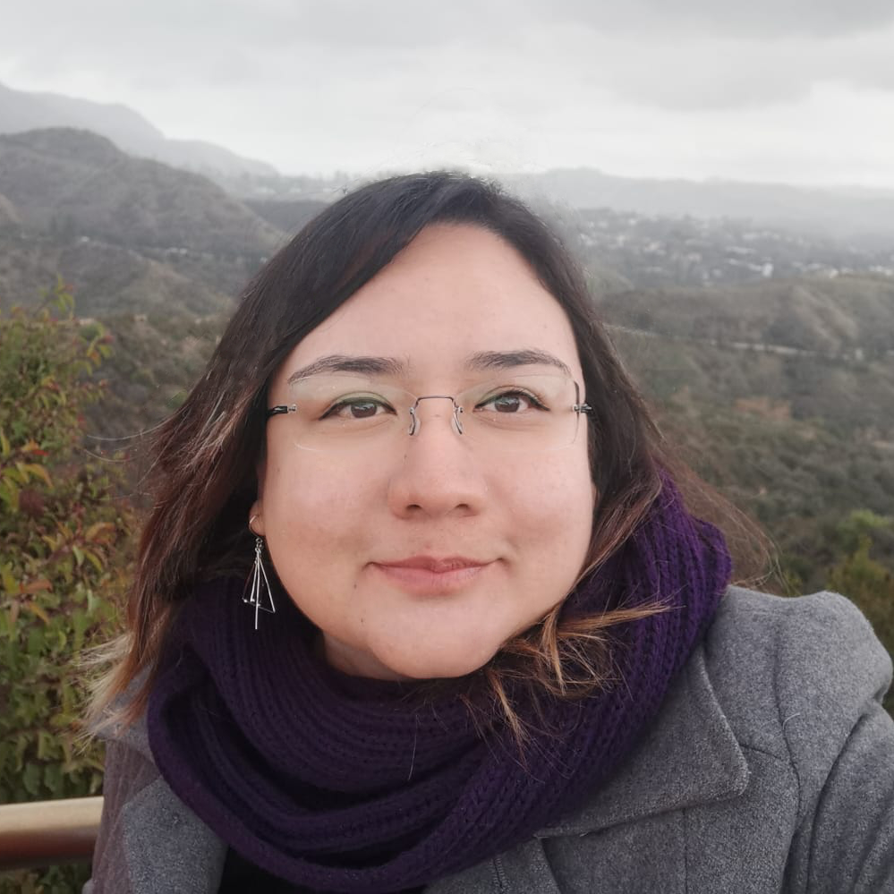

Me llamo Belén Díaz Valderrama

Te platico sobre mí, soy una persona curiosa de saberes y siempre me ha gustado investigar sobre cómo se hacen las cosas que rodean y algunas aveces me pregunto... ¿cómo se podrían mejorar? 🤔
Mi formación académica ha sido como diseñadora gráfica con especialidad en diseño multimedia y dentro de mi preparación continua me he enfocado en seguir temas de distintas áreas de conocimiento como informática, diseño de interfaz y experiencia de usuario, desarrollo de software, design thinking, diseño web, comunicación, y recientemente, diseño de servicios.
Ahora permíteme platicarte acerca de mi experiencia profesional así como expresar mi interés y entusiasmo por colaborar en nuevos proyectos que ayuden a las personas a cumplir sus sueños y mejorar su calidad de vida.
Dentro de mi trayectoria laboral, he trabajado en la iniciativa privada y también para instituciones de gobierno.
Recientemente he tenido la oportunidad de colaborar y formar parte de equipos multidisciplinarios en los que se han construido proyectos digitales innovadores.
Y sí, la verdad he aprendido mucho y me siento muy agradecida de todas y cada una de las experiencias laborales que he tenido, porque además de trabajar y aplicar mis conocimientos también he tenido muchas veces que reaprender, no solo cuestiones técnicas, sino también aspectos sociales y habilidades humanas. Y sabes algo, todo eso fue posible gracias a todas las personas que he conocido, compañeros de trabajo, maestros y por supuesto mi familia.
En la actualidad estoy en la búsqueda de crecer y madurar en mi profesión y compartir experiencias y conocimientos con las áreas que lo requieran. 👍
😃 Y bien, hasta el día de hoy es lo que he hecho, sigo aprendiendo y trabajando en proyectos personales. Si tienes o conoces de algún proyecto buena onda en el que podamos conectar, me gustaría mucho sumarme y construir experiencias memorables. 💭
🤩 Por tu atención, muchas gracias. Y estoy atenta por cualquier duda, cometario o por cualquier noticia. Si gustas saber un poco más de mi perfil, te dejo aquí abajo 👇 un PDF con toda la información.
Saludos,
Belén Díaz 👍